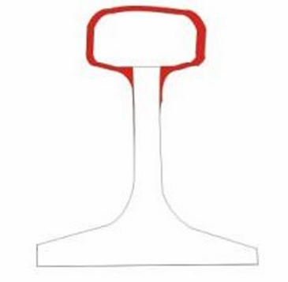
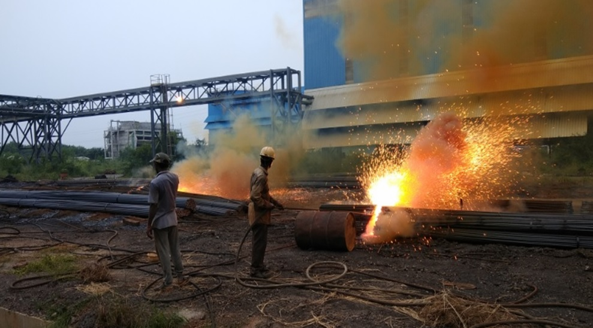
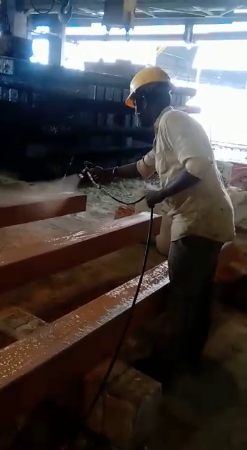
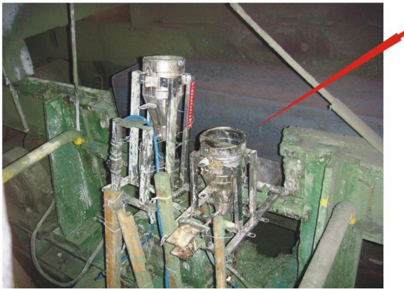
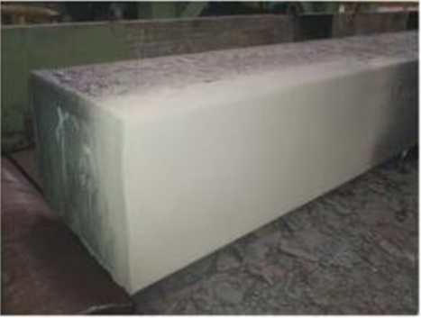
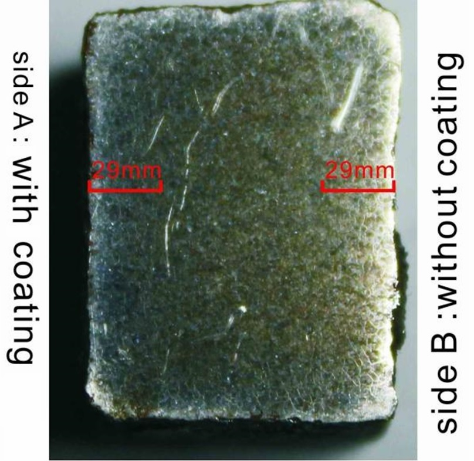
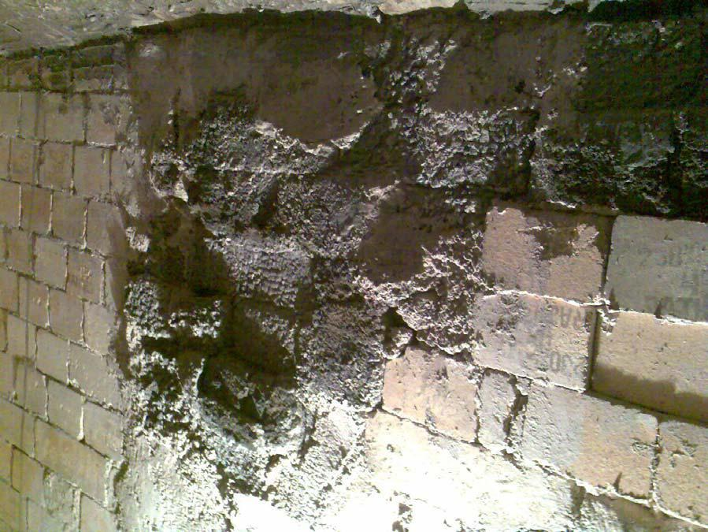
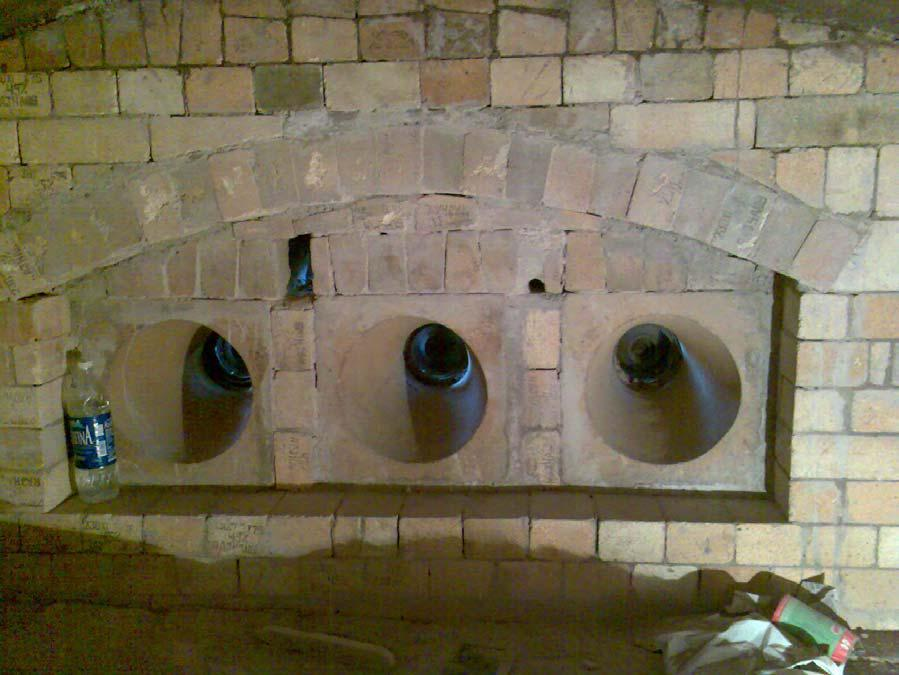
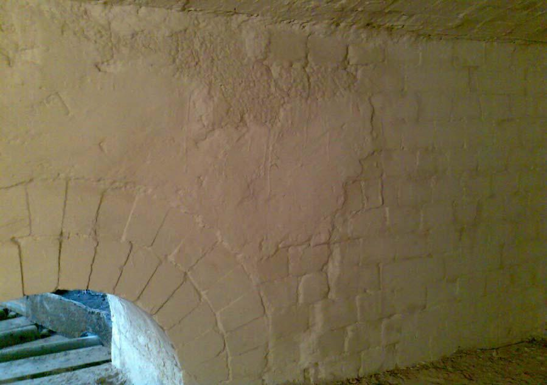
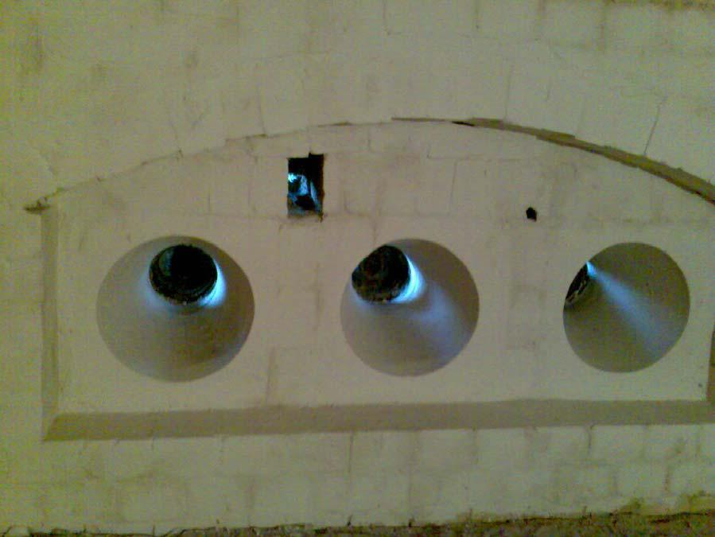

Introduction
Abstract: Manufacture of hot rolled rails is a complex process as compared with most other rolled products. Hot rolled rail affects very important parameters like passenger safety in all seasons, durability of rails to ensure minimum downtime of rail-transport and fast transportation of locomotives on the laid-out rail tracks. With the demand of all types of rail steel rising substantially in recent times, there is a constant need to manufacture hot rolled rail steels with stringent quality checks to ensure that all the required parameters are met, at the least cost.
This article provides information on two techniques that have proven to prevent rejections, increase yield and reduce fuel consumption in the hot rolling of rail steels. Both techniques involve the use of protective coatings at various stages of manufacturing rail steels.
Protective coatings play a major role in increasing productivity and reducing costs in metal forming processes like hot rolling and heat treatment. These coatings are pioneered in India by an experienced metallurgist from the Indian Institute of Technology (I.I.T.), Mumbai. Details and successful case studies of two such protective coatings are presented below:
These techniques can be easily adopted by all hot rolling mills, large or small.
Protective Coating 1: To Control Decarburisation and Prevent Scaling
In hot rolling of rail steels, the major factor accounting for rejections is decarburization, and for reduced yield is ‘burning loss’ or ‘scale loss’ or ‘mill scale’ caused due to oxidation. Decarburization and oxidation of steel take place when billets are heated in a billet re-heating furnace, in the presence of air or products of combustion. Apart from burning loss of between 1.5% up to 4%, decarburization and oxidation lead to numerous other problems like scale pit marks, bad quality surface finish of metal, rejections, cumbersome task of removal of mill scale and increased expensive operations like bar-peeling, grinding, shot blasting, etc., in some type of rolled products.


Understanding Oxidation and Decarburisation
For the purpose of hot rolling, when billets or blooms are heated in an open atmosphere furnace in the presence of air or products of combustion, the surface phenomena of oxidation and decarburization take place. Oxidation causes immediate corrosion of steel at high temperature and creates a layer of metal-oxide, or mill scale, on the surface of the billets or ingots. Decarburisation is a simultaneous reaction that removes carbon from surface, thereby making the steel unfit for use as rails.
A decarburized layer decreases the hardness and wear resistance of rail steels. The wear rate of a decarburized rail is over twice that of the same steel without decarburization. With an increase in the depth of decarburization, the damage of rail roller turns from major spalling to pitting and peeling. In addition, surface fatigue cracks become more serious as depth increases. By contrast, shallow decarburization has little effect on rolling contact fatigue (RCF) of the rail material. Only when the depth of the decarburization exceeds a certain thickness (i.e., about 0.5 mm), RCF damage sharply worsens as decarburization depth increases. (Source: H.Y. Wang et. al.: Effects of decarburisation on the wear resistance and damage mechanism of rail steels subject to contact fatigue. July 2016. Wear 364)
Oxidation of steel is caused by oxygen, carbon dioxide and/or water-vapour. The general reactions are given below:
Oxidation of steel may range from a tight, adherent straw-coloured film that forms at a temperature of about 180°C to a loose, blue-black oxide scale that forms at temperature above about 450°C with resultant loss of metal or reduced yield.
Harmful Effects of Oxidation and Decarburisation
Oxidation leads to loss of dimensions and material as extra material allowance needs to be kept for scaling. Often, surface quality is deteriorated due to scale-pitting. This is especially true in the case of Nickel (Ni) steel.
Throughout the industry, this burning loss or scale loss is simply treated as wastage and not many practical solutions are available to stop or reduce this wastage. Problems like thick adherent scaling or scale pit marks or decarburization are dealt by manually grinding off the scale or decarburized layer after the hot rolling process. In many cases, entire heat of billets with excessive decarburization are gas cut and fed to scrap. This is a huge loss of energy and rolling mill production time.

Prevention or substantial reduction of oxidation is not only better than cure, it is profitable too. However, most of the available solutions pose a number of practical difficulties. Capital-intensive special furnaces and availability of human resource for using these high-end furnaces is a major issue. Many small hot rolling organisations cannot afford these solutions. Yet they are under mounting pressure to prevent rejections, increase yield and reduce costs. Use of protective coating on billets has proven to be a feasible solution to the problem of decarburization and scaling in hot rolling.
Characteristics of Protective Coating and Its Use
Use of protective coating has been found beneficial and cost-effective. An anti-scale coating is applied on billets / ingots to be heated, before charging them into furnace. This anti-scale protective coating acts as a barrier between oxygen and metal. Care is taken to apply a uniform, impervious layer of coating on the billet to be heated. Coating ensures substantial reduction of oxidation, and thereby reduction in burning loss or mill scale. Anti-scale coating also reduces decarburization on billets during hot rolling operations. Heat transfer from heating media to metal is not affected due to anti-scale protective coating.

No reaction with steel surface, no release of toxic fumes during use or hot rolling or storage, non-hazardous and economical implementation are other required characteristics of the coating.


The image above shows automatic spraying of protective coating on only one side of billets. In many cases, especially in pusher-type furnaces, decarburization and scaling are excessive on top surface of billets. Hence, rolling mills find it effective enough to spray only the top surface of billets. In the case of rail steels, the side of the billet that will eventually become the top part of the rail on which the wheels will move is most important. Hence, it is very important to control decarburisation and scaling on this critical side of the billet. This is done by spray of protective coating on the critical side of the rail steel billets.

Preventing Rejections, Increasing Yield by the Use of Protective Anti-Scale Coating: Industrial Case Studies and Success Stories
Due to reduction in oxidation by the use of protective anti-scale coating during hot rolling, the scale thickness is considerably reduced and decarburization is controlled. As a result, a range of benefits are achieved. Many benefits can be perceived immediately and some benefits can be perceived in the long run.

Adjoining photographs are of mill scale that were generated on billets during re-heating for hot rolling, with and without using protective anti-scale coating:


A report of a number of mild-steel billets hot rolled without coating, in comparison with hot rolling similar billets with single coating and double coating of anti-scale protection, is provided below:
| Sr. No. | Billet Wt. Before Coating (kg) | Billet Wt. After Heating (kg) | Scale Difference (kg) | 3 Billet Wt. Before Coating (kg) | 3 Billet Wt. After Heating (kg) | Coating Type |
|---|---|---|---|---|---|---|
| 1 | 47.720 | 47.330 | 0.390 | With Coating | ||
| 2 | 47.010 | 46.660 | 0.350 | With Coating | ||
| 3 | 46.510 | 46.110 | 0.400 | 141.240 (Sr. No. 1, 2, 3) | 140.100 (Sr. No. 1, 2, 3) | With Coating |
| 4 | 47.720 | 46.900 | 0.820 | Without Coating | ||
| 5 | 46.930 | 46.260 | 0.670 | Without Coating | ||
| 6 | 46.450 | 45.800 | 0.650 | 141.100 (Sr. No. 4, 5, 6) | 138.960 (Sr. No. 4, 5, 6) | Without Coating |
Benefits Achieved by the Use of Protective Coatings in Hot Rolling of Rails
1. Reduced Decarburization of Rail Steel
Rail steel and certain grades like spring steels, ball bearing steels etc. are susceptible to decarburisation. During hot rolling of these special grades, decarburization needs to be consistently maintained to the required specification. However, due to unforeseen conditions like mill breakdown and unplanned downtime, billets remain in the furnace for longer time than usual. Also, when the plant is closed for weekly holiday, furnace is shut off abruptly, subjecting the billets to prolonged heating inside the furnace. If billets are not coated, it becomes difficult to guarantee the consistency in the decarburization level. Use of protective coatings on billets before charging them into the re-heating furnace enables to maintain the decarburization level consistently. This enables the hot rolling mill to guarantee their customers that decarburization level will always be less than the upper control limit.
During hot rolling of rails, especially high-speed rails, decarburization needs to be controlled stringently. Even if decarburization is controlled during billet heating, it needs to be further controlled during heat treatment. This is possible by the use of decarburization control protective coatings.

Controlling decarburization on other components like automobile leaf springs leads to increased fatigue strength and greater reliability. Leaf springs heated after applying protective coating show substantially reduced decarburization and scaling.
2. Reduced Furnace Downtime for Scale Removal and Hearth Repair / Increased Roll Life
Scales fallen in furnace have a tendency to damage the furnace floors or hearth. In many rolling mills, furnace downtime is undergone only to remove scale from furnaces and to repair the hearth. Removal of scale from rolling machinery and all other locations of the rolling mill is also a cost. Hence, substantial reduction in scale will automatically reduce costs involved in disposal of scale. Furnace downtime is reduced. Reduction of scale also has a positive effect on roll life as adherent scale is known to cause serrations, and compromise roll life. Hence, there is an overall positive impact on productivity of the hot rolling plant.
Benefits Achieved by the Use of Protective Coatings in Hot Rolling of Other Grades of Steel
Reduction in Bar Peeling, Shot Blasting, Acid Pickling Time of Hot Rolled Products
Bar peeling is carried out with the sole purpose of removing surface defects like decarburization and scale pits. It is a capital-intensive and time consuming process. By the use of protective coatings on billets, the causes of surface defects are prevented or reduced. There is consistent control of decarburization and scaling. Owing to this reliability offered by protective coatings, bar peeling operations can be reduced substantially. In many operations, bar peeling could be reduced by 50% due to consistent reduction in decarburization and scaling.
Operations like grinding, acid pickling, etc. do not add value, are expensive and time consuming procedures. These operations are necessary to remove adherent scaling from the hot rolled billets. Time required for operations like shot blasting, grinding, acid pickling, etc. can be substantially reduced if protective anti-scale coating is applied on components before heat treatment. Aesthetic appeal of rolled products is automatically enhanced without much effort as scaling is either prevented or reduced by the use of anti-oxidation protective coating.
Preventing Cracking During Hot Rolling
Micro cracks formation is a common occurrence during casting of billets. 20MnCr5 and a range of such sensitive grades of steel are susceptible to cracks. There are different types of surface defects, with many of them having to do with the poor quality of steel during continuous casting. Other important stages following continuous casting are reheating and hot rolling. There is always a chance that surface defects after casting are either very small or not detected. These defects will extend and show up in the later stages, i.e., during reheating or rolling and heat treatment. Depending on the depth of surface irregularities on the surface of heavy plates, they might be rejected, which is considered as a major economic loss for a plant. Alternatively, a heavy plate containing surface defects might be downgraded due to poor surface quality and poor surface appearance. Minor cracks formed during casting of billets are further intensified during hot rolling and lead to major cracking of hot rolled products. Similarly, micro cracks formed during hot rolling propagate further during heat treatment. Thus, one of the most important objectives of a hot rolling plant is to minimize surface defects.
In such cases, protective coatings are used to prevent cracking of hot rolled products. The coating prevents intensifying of micro cracks that are formed during preliminary stages. Hence, billets must be protected with coating before re-heating for hot rolling.
Improving Surface Finish of Hot Rolled Components and Preventing Welding of Billets During Heating
During hot rolling of special grades of steel like Nickel (Ni) and 416 Stainless Steel containing high sulphur, mill scale formation is greatly increased. Surface finish of hot rolled product may be compromised due to scale pits and rolled-in scale. Occasionally, due to heavy adherent scale, problem of roll skid is also encountered. Subsequent grinding operations are increased due to excessive mill scale. Protecting the billets with anti-scale protective coating before charging them into the re-heating furnace ensures remarkable reduction in oxidation and mill scale. It enables to achieve good surface finish of the hot rolled products, free from scale pits and rolled-in scale.
During re-heating of billets in pusher-type furnaces, sometimes, billets get welded together. This leads to unproductive process of separating the welded billets and downtime. Welding of billets during hot rolling can be prevented by applying protective coating on billets ends before charging them into the furnace.
Protective Coating 2: To Reduce Fuel Consumption and Increase Refractory Lining Life in Furnace Operations
Hot rolling involves plastic deformation of heated metals and alloys into flat products (slabs, plates) or long products (rails, wire rods, angles, channels, I sections, TMT bars, etc.). In this important metal forming operation, refractory and fuel for the reheating furnace (such as furnace oil, pulverized coal or gas) are the major costs. Any process or technique to reduce these costs will automatically improve the profitability of the rolling mill.
The Following Problems Are Encountered in the Case of Refractories
- Thermal shock cracking: Thermal shock is unavoidable in furnace operation, however much care may be taken. Due to thermal shock, cracks are initiated in the refractory lining. Energy leaks through these cracks. This loss may be as high as 33% of the total energy consumption. This is the reason why fuel consumption is observed to be more after a time gap of say, six months from the date of relining the furnace, for the same level of production.
- Low emissivity: Refractory lining has a low emissivity of 0.2 and hence hampers furnace efficiency. Improving this value to 0.5 or more will lead to fuel saving.
- Corrosive action: Furnace oil contains sulphur dioxide and vanadium pent oxide. These compounds corrode the refractory lining.
- Vicious sand blasting effect: The flame impinging on the refractory lining has a vicious effect of sand blasting.
- Carbon deposit on the burner blocks: This problem is more pronounced when the fuel used is furnace oil. Unburned carbon deposits on the burner blocks, and over a period of time, sufficient carbon build up takes place. Due to this build up, the flame geometry is impaired and heating efficiency is lowered.
Use of Protective Refractory Coatings
To overcome these problems, the entire refractory lining of the reheating furnace is coated with a special zircon based coating. The coating can withstand heat of up to 1900 deg. C. Fig. 1 and 2 show the condition of the refractory lining and burner blocks before coating, and Fig. 3 and 4 show their condition after using refractory coating.




Results of Refractory Protective Coatings
A hot rolling mill producing 40,000 tons per annum of TMT bars has reported the following results:
Increased Refractory Lining Life
Fuel Consumption
In the annealing furnace of a reputed stainless steel hot rolling organization, the following savings by the use of protective refractory coating were recorded:
| Sr. No. | Details | Unit of Measure | Value |
|---|---|---|---|
| Furnace temperature | Deg. C. | 1250 | |
| 1 | Propane consumption before coating | kg/mt | 25.94 |
| 2 | Propane consumption after coating | kg/mt | 25.75 |
| 3 | Average fuel saving | kg/mt | 0.19 |
| 4 | Average production | mt (per month) | 21,330 |
| 5 | Fuel price | Rs./mt | 41,821 |
| 6 | Fuel saving per month | mt | 4.053 |
| 7 | Saving per month | Rs. | 1,69,488 |
| 8 | ROI (Return on investment) for ESPON coating per furnace | Period | 1 month |
Other results include:
Reduction in Time Required for Achieving Hot Rolling Temperature of 1250 Deg. C.
In many hot rolling mills, billet re-heating furnace is shut down in the evening at end of working shift. Furnace is switched on next morning, at start of working day. It is observed that use of protective refractory coating enabled achieving the required temperature of 1250 deg. C. much faster than the time required to achieve same temperature when refractory is not coated. Reason: high retention of heat in furnace and increased emissivity of heat by the use of protective refractory coating. In best cases, approximately 45 minutes to 1 hour of time was saved in achieving temperature of 1250 deg. C. Hence, substantial fuel saving is achieved and hot rolling production can commence faster.
Increased Uniformity of Heat Throughout Furnace Chamber
This is achieved due to heat retention and better heat emissivity by the use of protective refractory coating.
Reduced Furnace Outer Shell Temperature by 10 Deg. C. to 20 Deg. C.
All gaps and cracks in refractory lining are sealed off during application of refractory coating. This prevents energy leaks, thereby restricting heat transfer to furnace outer shell. Hence, furnace outer shell temperature is reduced as compared with not coated refractory.
Summary and Conclusion
- Protective billet coatings enable consistent control of decarburisation and up to 70% reduction in burning loss or mill scale loss in hot rolling. A number of additional benefits are achieved like substantial reduction of bar-peeling, grinding, acid pickling, etc., prevention of billet welding in furnace and improved surface finish of rolled products.
- Protective refractory coatings enable reduction in fuel consumption, increase in refractory lining life and reduction in furnace maintenance downtime. In many reputed organisations, the return on investment (ROI) is confirmed to be 1 month only.
- Use of protective coatings has proven to achieve substantial savings by preventing rejections, increasing yield and reducing fuel consumption in hot rolling of rails and other products.
Call to Action: If rejections, decarburization, or furnace fuel consumption are eating into your rail steel or hot rolling mill's margins, team SPS can help you evaluate both protective billet coating and protective refractory coating for your operation.

S.P. Shenoy
A metallurgist from the Indian Institute of Technology, Mumbai and CEO of M/s. Steel Plant Specialities (SPS), Mumbai, India, established in 1985, engaged in the manufacture of environment friendly hot forging die lubricants and a range of protective coatings that enable cost reduction in hot forging, heat treatment and hot rolling operations.